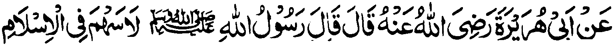
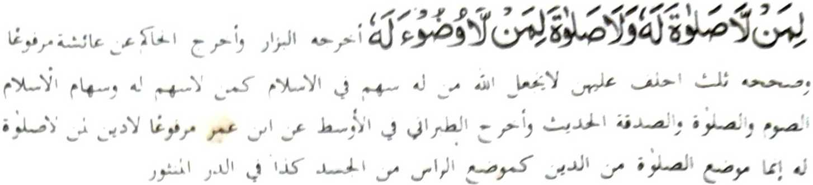

Miyaka thitayan ko Abu Hurairah (Rad-hiallaho ’Anho) a pitharo iyan a pitharo o Rasulollah (Sallallaho 'Alaihi Wasallam), "Da-a bagi-an niyan ko Islam so tao a da a Sambayang iyan, go da-a Sambayang amay ka da-a abdas. "(Piyakaliyo o Bazar go so Hakim a miyaka thitayan ko A’isha a miyaka po-on ko Rasulollah (Sallallaho 'Alaihi Wasallam), "Telo betad aipezapa aken ka diden mbalowin o Allah so tao a aden a bagi-an niyan ko Islam o ba lagid o tao a da-a bagi-an niyan ko Islam. Aya bagi-an ko Islam na so powasa, so Sambayang ago so kazasadeka." Go miyakathitayan ko Ibn Omar a, "Da-a Agama o tao a da-a Sambayang iyan ka aya darepa o Sambayang ko Islam na lagid o darepa o olo si-i ko lawas."
Tharo-on ko langon o manga tao a di pezambayang, a siran na kena ba giyayabo a katatarima-a iran sa siran na manga Muslim ka tatarima-an niran pen a siran i lomilinding ko kabenar o manga Muslim, a pamimikirana iran angka-iya manga katharo o Nabi (Sallallaho 'Alaihi Wasallam). l-inamen niran a kapakaborantao o menang o Islam, ogaid na di iran i-inengka-an o anda taman i kinggogolalanen o manga tao, a gi-i nggalebek sa kakowa angkanan a menang, si-i ko manga paliyogat o Islam.
So Abdullah bin Abbas (Radhiallaho 'Anho) na biyolagan so isa ko manga mata niyan na miyatharo-on a giyangkoto a sakit iyan a khabolongan asar ka makalepas sa Sambayang si i ko pita gawi-i. Pitharo iyan, "Diden khaparo. Miyaneg aken so Nabi (Sallallaho 'Alaihi Wasallam) a gi-i niyan tharo-on, 'So tao a di pezambayang na makatindeg sa hadapan o Allah a pekhararangitan sekaniyan o Allah.’ So manga Sahabah o Nabi (SalIallaho 'Alaihi Wasallam) na kharao iran a basiran den mabota asar ka diran mibagak so Sambayang (apiya pen aden a kakhaparo niyan) apiya si-i bo ko pira gawi-i. Si-i ko mori a manga gawi-i o Umar (Radhiallaho ’Anho) ko kiyagonongi ron o Majoosi, na lalayon pekhada-an sa tanod, sa giyoto den i kiyasabapan sa kiyawapat iyan sabap ko kinitaralo o gi-i kaphirogo o pali. Si-i ko lalantangan non a iga-an na kiya tanodan niyan so kaphakasoled o wakto na gi-i pen makapagabdas sangkoto a masosowa iyan, go gi-i niyan tharo-on, "Da-a bagi-an o tao ko Islam so tao a di pezambayang." Imanto a masa na inibetad sa kada-a gagao go di patot o ba so pekhasakit na isogo-on odi na pakazam bayangen. Tanto a miyakazorang a kapaginetao so pamikiran o manga Muslim sangka-iya dowa a masa (so masa o manga Sahabah ago so masa tano imanto)!
So Ali (Radhiallaho 'Anho) na miyaka-isa na miyangeni ko Nabi (Sallallaho 'Alaihi Wasallam) sa zogo-on. Pitharo-on o Nabi (Sallallaho 'Alaihi Wasallam), "Kati-i so telo katao na pamimili ka on sa khabaya-an ka." Pitharo o Ali, "Kapiya-an ka sa seka den i pili raken non." Initoro o Nabi (Sallallaho 'Alaihi Wasallam) so isa on ago pitharo iyan, ”Kowa angka ini, sekaniyan na lalayon gi-i zambayang. Ogaid na obangka peranega. lnisapar reketano o ba tano peraneg sa tao a barasambayang." Seketano na gi-i tano zodi-in so zogo-on tano ago ipembetad tano pen sa da-a paka-id iyan a zogo-on opama ka pamayandegen niyan so Sambayang.
So Sufyan Thauri (Rahmatullah 'Alaihi), a kababantogan a Auliya na miyaka isa na kiyada-an sa molkayat sabap sa kinitaralo o kapipiya ginawa. Miyaka pito gawi-i na makatatareg ko walay niyan a daden a torog, da-a kakan ago da-a kainom. Kagiya mapanothol ko Shiekh iyan so masosowa iyan na ini-iza iyan so kinggogolalanen niyan ko Sambayang. Miyapanotholon a so Sambayang iyan na da kabinasa-i. Oriyan niyan na so Shiekh iyan na pitharo iyan, "Soti so Allah, Sekaniyan so da Niyan pangonoten ko Saitan a katabana niyan rekaniyan!"